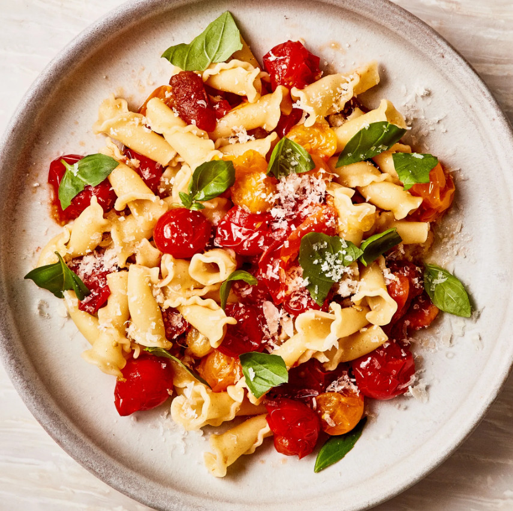

Burst Cherry Tomato Sauce

Quick, easy, and ridiculously good sauce for any pasta
A simple sauce of juicy, bursty cherry tomatoes (aka nature's Gushers) that comes together in around 15 minutes. If you can't find cherry tomatoes, any larger ones will work just as well for this summery pasta sauce recipe. Simply cut them into pieces about the size of cherry tomatoes and proceed.
Ingredients
- 1/2 cup extra-virgin olive oil, plus more for drizzling
- 6 garlic cloves, smashed
- 4 pints cherry tomatoes (about 2 and a half lb.)
- 3/4 tsp. crushed red pepper flakes
- 2 large sprigs basil, plus 1 cup basil leaves, torn if large
- 1 1/2 tsp. kosher salt, plus more
- Pinch of sugar (optional)
- 12 oz. campanelle or other tube pasta
- 1 oz. finely grated Parmesan (about ⅓ cup), plus more for serving
Steps
- Heat ½ cup oil in a large heavy pot over low. Add garlic and cook, stirring, until softened and fragrant but not browned, about 2 minutes. Increase heat to medium and add tomatoes, red pepper flakes, basil sprigs, and 1½ tsp. salt. Cook, stirring to coat, until tomatoes begin to burst, about 4 minutes. Smash some but not all of the tomatoes with the back of a wooden spoon to help create a sauce, then continue to cook, stirring occasionally, until a chunky, thickened sauce comes together and about half the tomatoes are completely broken down and half remain in tact, 10 to 12 minutes. Taste and adjust seasoning, adding sugar if sauce seems tart. Pluck out and discard basil sprigs.
- Meanwhile, cook pasta in a large pot of boiling salted water, stirring occasionally, until al dente. Drain pasta, add to pot with sauce, and cook over medium heat, stirring, until coated, 1–2 minutes. Remove from heat and stir in 1 oz. Parmesan.
- Divide pasta among bowls. Top with more Parmesan and 1 cup basil leaves. Drizzle with oil.